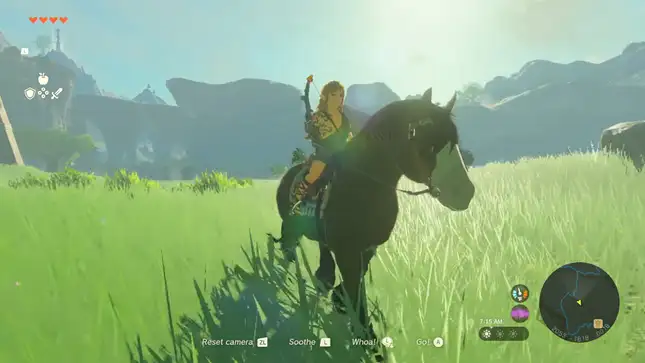
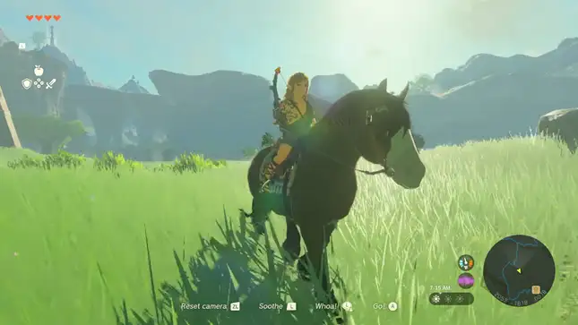
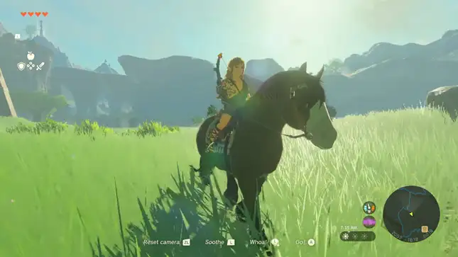

When Link and princess Zelda investigate Zonai ruins in a cave beneath the castle, they witness the awakening of a mummified Ganondorf, whose powers then corrupt Link's arm, after which Hyrule Castle is sent floating upward into the sky. Link then embarks on a story to find princess zelda.
Gameinformation
genre:
Action-adventure
gamesoort:
singleplayer
rating:
96
uitgever:
nintendo
uitgavedatum:
12 mei 2023
Images

Systeemvereisten
Besturingsysteem: Nintendo Switch system software
Processor: Nvidia Tegra X1
Geheugen: 4 GB RAM
Grafische kaart: Nvidia GTX 1650
Direct X:-
Opslagruimte: 16,7 GB beschikbare ruimte
Reviews
Destroid
The real kicker that helps separate Tears from Breath of the Wild is its power set. I felt like I was in control at all times, and had the ability to create my own path. For a series known for sequence-breaking, that's not just a perk; it's a strong argument for why Tears of the Kingdom will be talked about for years on end.
GameSpot
Zelda: Tears of the Kingdom is a canvas for your own creativity, a book to write your own stories, a world to create your own legends. It gives you back as much as you put into it, and beckons you to soar, burrow, engineer, solve, adventure, and explore.
GamesHub
Breath of the Wild reinvented The Legend of Zelda. Tears of the Kingdom reimagines it once more, as a somehow more ambitious, freeform and creative game, with even greater highs – literally and figuratively. It’s a staggeringly eye-opening game that expertly cultivates the joy of exploration, discovery and believing in your own abilities.


 
